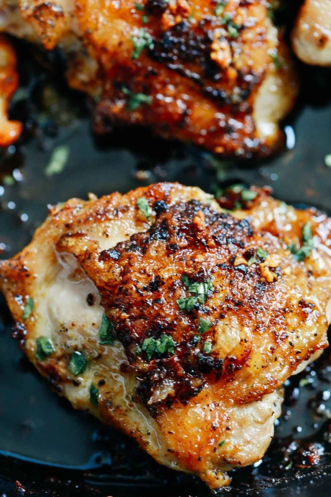
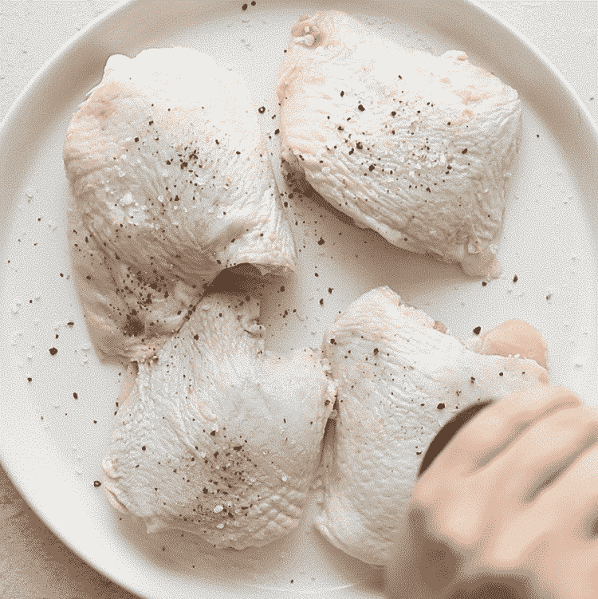
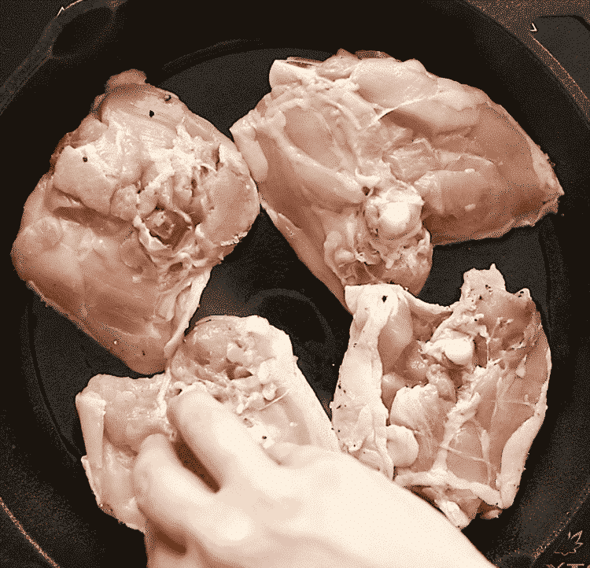
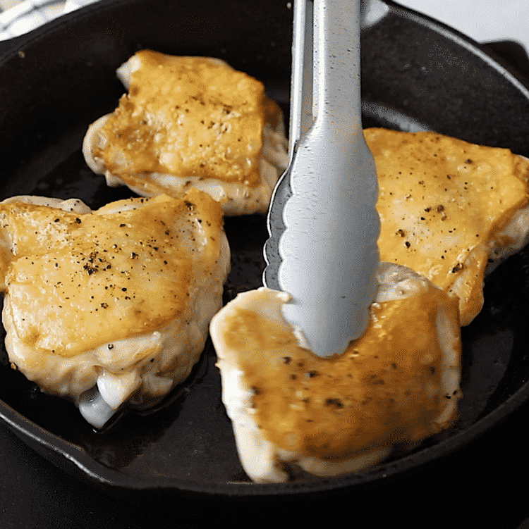
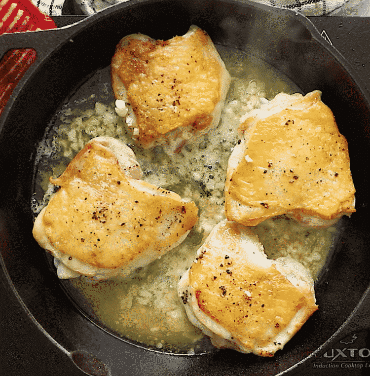
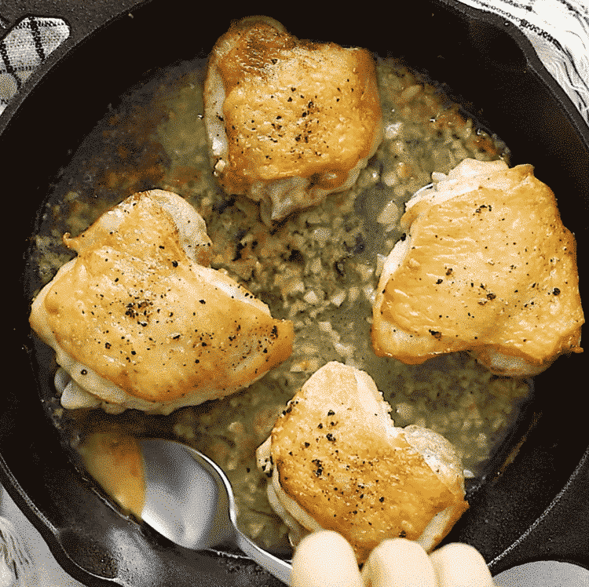

Garlic Butter Chicken Thighs

Prep: 10 minutes Cook: 35 minutes
Total: Total: 45 Minutes
Ingredients
- 5 chicken thighs skin on and bone in
- Salt and black pepper to taste
- 1 tablespoon olive oil
- 1/4 Cup butter
- 5 cloves garlic crushed
- Fresh parsley chopped
Instructions
- PreHeat your oven to 400F degrees.
-
Pat chicken thighs dry with paper towel and season all over with salt
and black pepper.

-
Heat olive oil in a cast iron skillet (10-inch) over medium heat. Place
the chicken thighs skin-side down
and sear until the skin is golden and crispy. It’s about 5 minutes (they
will not be cooked through at this point).

-
Flip your chicken over once the skin is crispy.
If your chicken thighs releases a lot of fat, dispose it using a spoon.

-
Place butter in the same skillet. When the butter is melted, add minced
garlic. Stir the garlic around the pan for 30 seconds.

-
Place the whole skillet in the oven and bake for 30 mins for until
chicken gets the internal temperature at 165°F.
-
When the chicken is cooked, spoon some of the garlic butter sauce over
the top of each chicken thigh. Top with parsley before serving.

Nutrition Information
Serving: 1/5 Calories: 214kcal (11%) Carbohydrates: 1g Protein: 15g (30%)
Fat: 18g (28%) Saturated Fat: 8g (50%) Polyunsaturated Fat: 2g
Monounsaturated Fat: 7g Cholesterol: 96mg (32%) Sodium: 130mg (6%)
Potassium: 15mg